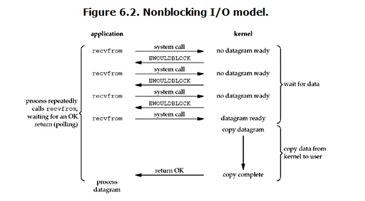

python之并发编程（概念篇）
一.进程
1.什么是进程
进程是正在进行的一个过程或者一个任务。而负责执行任务的则是cpu。
2.进程与程序的区别
程序并不能单独运行，只有将程序装载到内存中，系统为它分配资源才能运行，而这种执行的程序就称之为进程。程序和进程的区别就在于：程序是指令的集合，它是进程运行的静态描述文本；进程是程序的一次执行活动，属于动态概念。同一个程序执行两次是两个进程。
在多道编程中，我们允许多个程序同时加载到内存中，在操作系统的调度下，可以实现并发地执行。这是这样的设计，大大提高了CPU的利用率。进程的出现让每个用户感觉到自己独享CPU，因此，进程就是为了在CPU上实现多道编程而提出的。
3.并发与并行
无论是并行还是并发，在用户看来都是’同时’运行的，而一个cpu同一时刻只能执行一个任务。
- 并发：是伪并行，即某个时段看起来是同时运行。单个cpu+多道技术就可以实现并发，（并行也属于并发）
- 并行：同时运行，只有具备多个cpu才能实现并行。
单核下，可以利用多道技术，多核中的每个核也都可以利用多道技术（多道技术是针对单核而言的）
有四个核，六个任务，这样同一时间有四个任务被执行，假设分别被分配给了cpu1，cpu2，cpu3，cpu4，
一旦任务1遇到I/O就被迫中断执行，此时任务5就拿到cpu1的时间片去执行，这就是单核下的多道技术
而一旦任务1的I/O结束了，操作系统会重新调用它(需知进程的调度、分配给哪个cpu运行，由操作系统说了算)，可能被分配给四个cpu中的任意一个去执行。
4.同步\异步and阻塞\非阻塞
同步：A调用B，B处理直到获得结果，才返回给A。
需要调用者一直等待和确认调用结果是否返回， 然后继续往下执行。
异步：A调用B，B直接返回。无需等待结果，B通过状态，通知等来通知A或回调函数来处理。
调用结果返回时， 会以消息或回调的方式通知调用者。
阻塞：A调用B，A被挂起直到B返回结果给A，A继续执行。
调用结果返回前，当前进程挂起不能够处理其他任务，一直等待调用结果返回。
非阻塞：A调用B，A不会被挂起，A可以执行其他操作。
调用结果返回前，当前进程不挂起， 可以去处理其他任务。
所以，同步异步说的是被调用者结果返回时通知进程的一种通知机制，阻塞非阻塞说的是调用结果返回前进程的状态，是挂起还是继续处理其他任务。
二.线程
1.什么是线程
线程是操作系统能够进行运算调度的最小单位。它被包含在进程之中，是进程中的实际运作单位。一条线程指的是进程中一个单一顺序的控制流，一个进程中可以并发多个线程，每条线程并行执行不同的任务。
2.线程与进程的区别
- 线程共享创建它的进程的内存空间，进程的内存是独立的
- 线程可以直接访问其进程的数据段，进程拥有父进程的数据段副本
- 线程可以直接与其进程的其他线程通信，进程间通信需要通过一个中间代理来实现。
- 新线程很容易创建，创建新进程需要对父进程实现一次复制。
- 线程可以控制和操作同一进程里的其他线程，进程只能控制子进程。
- 对主线程的更改（取消，优先级更改等）可能会影响到进程中其他线程的行为; 对父进程的更改不会影响子进程。
3.多线程
多线程指的是，在一个进程中开启多个线程，简单的讲：如果多个任务共用一块地址空间，那么必须在一个进程内开启多个线程。
详细的讲分为4点：
- 多线程共享一个进程的地址空间。
- 线程比进程更轻量级，线程比进程更容易创建可撤销，在许多操作系统中，创建一个线程比创建一个进程要快10-100倍，在有大量线程需要动态和快速修改时，这一特性很有用
- 若多个线程都是cpu密集型的，那么并不能获得性能上的增强，但是如果存在大量的计算和大量的I/O处理，拥有多个线程允许这些活动彼此重叠运行，从而会加快程序执行的速度。
- 在多cpu系统中，为了最大限度的利用多核，可以开启多个线程，比开进程开销要小的多。（这一条并不适用于python）
三.GIL全局解释器锁
每个线程在执行的过程中都需要先获取GIL，保证同一时刻只有一个线程在运行，目的是解决多线程同时竞争程序中的全局变量而出现的线程安全问题。它并不是python语言的特性，仅仅是由于历史的原因在CPython解释器中难以移除，因为python语言运行环境大部分默认在CPython解释器中。
由于以前的电脑基本都是单核CPU，多线程和单线程几乎看不出差别，可是由于计算机的迅速发展，现在的电脑几乎都是多核CPU了，最少也是两个核心数的，这时差别就出来了：通过之前的案例我们已经知道，即使在多核CPU中，多线程同一时刻也只有一个线程在运行，这样不仅不能利用多核CPU的优势，反而由于每个线程在多个CPU上是交替执行的，导致在不同CPU上切换时造成资源的浪费，反而会更慢。即原因是一个进程只存在一把gil锁，当在执行多个线程时，内部会争抢gil锁，这会造成当某一个线程没有抢到锁的时候会让cpu等待，进而不能合理利用多核cpu资源。
四.协程
1.协程是什么？
协程是单线程下的并发，一种用户态的轻量级线程，即协程是由用户程序自己控制调度的。
2.注意：
- python的线程属于内核级别的，即由操作系统控制调度（如单线程遇到io或执行时间过长就会被迫交出cpu执行权限，切换其他线程运行）
- 单线程内开启协程，一旦遇到io，就会从应用程序级别（而非操作系统）控制切换，以此来提升效率（！！！非io操作的切换与效率无关）
- 操作系统控制线程的切换，用户在单线程内控制协程的切换
3.优点与缺点：
优点：
协程的切换开销更小，属于程序级别的切换，操作系统完全感知不到，因而更加轻量级，单线程内就可以实现并发的效果，最大限度地利用cpu。
缺点：
协程的本质是单线程下，无法利用多核，（可以是一个程序开启多个进程，每个进程内开启多个线程，每个线程内开启协程）
协程指的是单个线程，因而一旦协程出现阻塞，将会阻塞整个线程
4.总结
- 必须在只有一个单线程里实现并发
- 修改共享数据不需加锁
- 用户程序里自己保存多个控制流的上下文栈
- 一个协程遇到IO操作自动切换到其它协程（如何实现检测IO，yield、greenlet都无法实现，就用到了gevent模块（select机制）
五.IO模型
1.IO模型介绍
IO发生时涉及的对象和步骤。对于一个network IO (这里我们以read举例)，它会涉及到两个系统对象，一个是调用这个IO的process (or thread)，另一个就是系统内核(kernel)。当一个read操作发生时，该操作会经历两个阶段：
1. 等待数据准备
2. 将数据从内核拷贝到进程中
不同IO模型的区别就是在两个阶段上各有不同的情况
补充
1 | |
2.阻塞IO
默认情况下所有的socket都是阻塞的
当用户进程调用了recvfrom这个系统调用，kernel就开始了IO的第一个阶段：准备数据。对于network io来说，很多时候数据在一开始还没有到达（比如，还没有收到一个完整的UDP包），这个时候kernel就要等待足够的数据到来。
而在用户进程这边，整个进程会被阻塞。当kernel一直等到数据准备好了，它就会将数据从kernel中拷贝到用户内存，然后kernel返回结果，用户进程才解除block的状态，重新运行起来。所以，blocking IO的特点就是在IO执行的两个阶段（等待数据和拷贝数据两个阶段）都被block了
除非特别指定，几乎所有的IO接口 ( 包括socket接口 ) 都是阻塞型的。这给网络编程带来了一个很大的问题，如在调用recv(1024)的同时，线程将被阻塞，在此期间，线程将无法执行任何运算或响应任何的网络请求。
一个简单的解决方案：
1 | |
该方案的问题是：
1 | |
改进方案：
1 | |
改进后方案其实也存在着问题：
1 | |
对应上例中的所面临的可能同时出现的上千甚至上万次的客户端请求，“线程池”或“连接池”或许可以缓解部分压力，但是不能解决所有问题。 总之
多线程模型可以方便高效的解决小规模的服务请求，但面对大规模的服务请求，多线程模型也会遇到瓶颈，可以用非阻塞接口来尝试解决这个问题。
3.非阻塞IO
可以通过设置socket使其变为non-blocking。当对一个non-blocking socket执行读操作时，流程是这个样子：

当用户进程发出read操作时，如果kernel中的数据还没有准备好，那么它并不会block用户进程，而是立刻返回一个error。从用户进程角度讲 ，它发起一个read操作后，并不需要等待，而是马上就得到了一个结果。用户进程判断结果是一个error时，它就知道数据还没有准备好，于是用户就可以在本次到下次再发起read询问的时间间隔内做其他事情，或者直接再次发送read操作。一旦kernel中的数据准备好了，并且又再次收到了用户进程的system call，那么它马上就将数据拷贝到了用户内存（这一阶段仍然是阻塞的），然后返回。
也就是说非阻塞的recvform系统调用调用之后，进程并没有被阻塞，内核马上返回给进程，如果数据还没准备好，此时会返回一个error。进程在返回之后，可以干点别的事情，然后再发起recvform系统调用。重复上面的过程，循环往复的进行recvform系统调用。这个过程通常被称之为轮询。轮询检查内核数据，直到数据准备好，再拷贝数据到进程，进行数据处理。需要注意，拷贝数据整个过程，进程仍然是属于阻塞的状态。
可以看到用户进程需要一直主动询问kernel数据准备好了没有，带来的问题就是
循环调用recv()将大幅度推高CPU占用率，在低配主机下极容易出现卡机情况。
任务完成的响应延迟增大了，因为每过一段时间才去轮询一次read操作，而任务可能在两次轮询之间的任意时间完成。这会导致整体数据吞吐量的降低。
此外，在这个方案中recv()更多的是起到检测“操作是否完成”的作用，实际操作系统提供了更为高效的检测“操作是否完成“作用的接口，例如select()多路复用模式，可以一次检测多个连接是否活跃。
4.多路复用IO
有些地方也称这种IO方式为事件驱动IO。我们都知道，select/epoll的好处就在于单个process就可以同时处理多个网络连接的IO。它的基本原理就是select/epoll这个function会不断的轮询所负责的所有socket，当某个socket有数据到达了，就通知用户进程。它的流程如图：

当用户进程调用了select，那么整个进程会被block，而同时，kernel会“监视”所有select负责的socket，当任何一个socket中的数据准备好了，select就会返回。这个时候用户进程再调用read操作，将数据从kernel拷贝到用户进程。
这个图和blocking IO的图其实并没有太大的不同，事实上还更差一些。因为这里需要使用两个系统调用(select和recvfrom)，而blocking IO只调用了一个系统调用(recvfrom)。但是，用select的优势在于它可以同时处理多个connection。
强调：
1. 如果处理的连接数不是很高的话，使用select/epoll的web server不一定比使用multi-threading + blocking IO的web server性能更好，可能延迟还更大。select/epoll的优势并不是对于单个连接能处理得更快，而是在于能处理更多的连接。
2. 在多路复用模型中，对于每一个socket，一般都设置成为non-blocking，但是，如上图所示，整个用户的process其实是一直被block的。只不过process是被select这个函数block，而不是被socket IO给block。
结论: select的优势在于可以处理多个连接，不适用于单个连接
select监听fd变化的过程分析：
1 | |
该模型的优点：
1 | |
该模型的缺点：
1 | |
5.异步IO

用户进程发起read操作之后，立刻就可以开始去做其它的事。而另一方面，从kernel的角度，当它受到一个asynchronous read之后，首先它会立刻返回，所以不会对用户进程产生任何block。然后，kernel会等待数据准备完成，然后将数据拷贝到用户内存，当这一切都完成之后，kernel会给用户进程发送一个signal，告诉它read操作完成了。
然后由于不稳定等原因异步IO用的并不多。
本博客所有文章除特别声明外，均采用 CC BY-SA 4.0 协议 ，转载请注明出处！